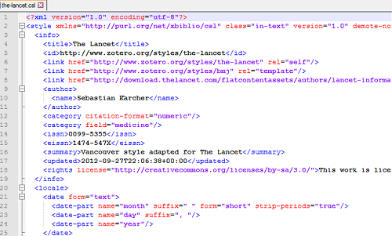
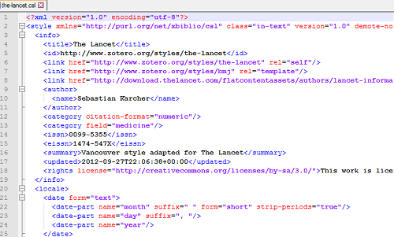

2017-06-22 20:38:24
目录
简介
什么是markdown?
Markdown is a text-to-HTML conversion tool for web writers. Markdown allows you to write using an easy-to-read, easy-to-write plain text format, then convert it to structurally valid XHTML (or HTML).
– John Gruber
- 作者: John Gruber 和 Aaron Swartz
- 目标: 成为一种适用于网络的书写语言，实现“易读、易写”
- 优点: 轻量、易学(半小时上手)，让写作者能更关注内容本身(而非排版)
- 应用广泛: GitHub、reddit、Stack Exchange、简书、…
markup vs markdown
其实markdown也是一种markup(标记)语言
常用的markup: HTML/XML
<h1>Title 1</h1>
<p>Bla <b>bla</b> bla.</p>
<hr>
<ul>
<li>Item 1</li>
<li>Item 2</li>
</ul>
<img src="image.png"></img>
对应的markdown
# Title 1 Bla **bla** bla. * * * - Item 1 - Item 2 
本地编辑器: StackEdit
GitHub
基本语法
标题 (h1 - h6)
# Header 1 Header 1 ========== ## Header 2 Header 2 ----------- ### Header 3 #### Header 4 ##### Header 5 ###### Header 6
Header 1
Header 2
Header 3
Header 4
Header 5
Header 6
编号
无序
* Item 1
* Item 2
+ Item 2a
+ Item 2b
- Item 2b1
- Item 2b2
- Item 1
- Item 2
- Item 2a
- Item 2b
- Item 2b1
- Item 2b2
有序
1. Item 1
1. Item 2
1. Item 3
1. Item 4
+ Item 4a
+ Item 4b
- Item 1
- Item 2
- Item 3
- Item 4
- Item 4a
- Item 4b
强调
斜体
*italic* _italic_*_
粗体
**bold** __bold__
bold
bold
断行、分割
断行
- 行末加两个以上空格
Roses are red, Violets are blue.
Roses are red,
Violets are blue.
- 如行末不多加空格
Roses are red, Violets are blue.
Roses are red, Violets are blue.
分割线
三个或以上星号/短横杠
--- ***
链接、图片
链接
<http://www.google.com> [Google](http://www.google.com)
图片

Fig: logo
引文
A friend once said: > ###### Rule No.1 > - It's always better to give > than to receive. > - Refer to the above.
A friend once said:
Rule No.1
- It's always better to give than to receive.
- Refer to the above.
代码
行内代码
- 功能性
There were `r nrow(cars)` cars studied
There were 50 cars studied
- 无功能性
Let's use dataset `cars`.
Let's use dataset cars.
代码块
- 功能性
```{r}
summary(cars$dist)
```
Min. 1st Qu. Median Mean 3rd Qu. Max. 2.00 26.00 36.00 42.98 56.00 120.00
- 无功能性
``` summary(cars$speed) ```
表格
First Header | Second Header ------------- | ------------- Content Cell | Content Cell Content Cell | Content Cell Content Cell | Content Cell
| First Header | Second Header |
|---|---|
| Content Cell | Content Cell |
| Content Cell | Content Cell |
| Content Cell | Content Cell |
| First Header | Second Header | |:-------------+--------------:| | Content `Cell` | Content *Cell* | | Content Cell | [Content](google.com) Cell | | Content Cell | Content **Cell** |
| First Header | Second Header |
|---|---|
Content Cell |
Content Cell |
| Content Cell | Content Cell |
| Content Cell | Content Cell |
\(\LaTeX\)公式
行内公式
$\LaTeX$ grammar for $\delta=(\alpha+\beta)/\gamma$
\(\LaTeX\) grammar for \(\delta=(\alpha+\beta)/\gamma\)
成块公式
Bayes Equation:
$$P(B|A)=\frac{P(A|B)P(B)}{P(A)}$$
Bayes Equation: \[P(B|A)=\frac{P(A|B)P(B)}{P(A)}\]
注释
注释型链接
I spend so much time reading [R bloggers][1] and [Simply Statistics][2]! [1]: http://www.r-bloggers.com/ "R bloggers" [2]: http://simplystatistics.org/ "Simply Statistics"
I spend so much time reading R bloggers and Simply Statistics!
脚注
I spend so much time reading R bloggers[^rb] [^rb]: R-bloggers "R-bloggers is a sets of blogs for R users."
I spend so much time reading R bloggers1
锚点
Go back to [Page 5](#5).
Go back to Page 5.
<p id="anchor-1">bla bla</p> Go to [anchor1](#anchor-1)
bla bla
Go to anchor1
其他
上下标
superscript^2^
superscript2
subscript~2~
subscript2
删除线
~~strikethrough~~
strikethrough
rmarkdown
rmarkdown包

官方示例

在Rstudio中创建RMarkdown(.Rmd)文档
- 开发方: RStudio Inc.
- 基于markdown语法，支持R、Python、SQL等程序语言
- 工作界面支持notebook
- 支持Word/HTML/PDF静态文档、交互文档、仪表盘、手册、图书、网站等
- 可安装
rticles包，基于内置模板生成报告

rmarkdown文档的结构

YAML头
- YAML: 主要用于编写配置文件的标记语言，较XML、json等更简洁
- 基本语法规则
- 大小写敏感
- 使用缩进而非嵌套表示层级关系
- 缩进时不允许使用Tab键，只允许使用空格。
- 缩进的空格数目不重要，只要相同层级的元素左侧对齐即可
- rmarkdown头部YAML
- 以三连横杠起始、结束
- 记录配置参数: title、author、date、output、reference、params等
- 通过配置output的主要参数，即可将文档转成相应格式
文档体
- 文档体包括文字和代码
- 文字部分支持markdown和LaTeX语法
- 代码支持R、Python、SQL、SAS等
- 以
```{r}或```{python}…起始 - 以 ``` 结束
- 以
- 一个
r, engine=python的例子
x="Hello, python world!"
print(x.split(' '))
## ['Hello,', 'python', 'world!']
参考文献 - 外部法
- 将文献导入Zotero，再导出为.bib
- 在YAML头定义bibliography和csl
bibliography: example.bib csl: the-lancet.csl
- 在正文中
@<文献id>引用某条文献,或- 例子 1
[@<文献1id>;@<文献2id>]引用文献- 例子1
- 文献会列表显示在文档末尾
 

参考文献 - 内部法
- 直接将各条文献按YAML语法写入YAML头
- 引用方法同外部法1,2
---
references:
- id: fenner2012a
title: One-click science marketing
author:
- family: Fenner
given: Martin
container-title: Nature Materials
volume: 11
URL: 'http://dx.doi.org/10.1038/nmat3283'
DOI: 10.1038/nmat3283
issue: 4
publisher: Nature Publishing Group
page: 261-263
type: article-journal
issued:
year: 2012
month: 3
---
params
- 在YAML头指定参数列表
- 文档代码块中直接以
params$<对象>引用这些参数 - 提高文档的复用性
---
title: Sample
output: html_document
params:
data: "iris"
---
```{r}
summary(params$data)
```
生成文档
.Rmd文档 –[knit]–> .md文档 –[Pandoc]–> 最终文档
- Pandoc是一个开源工具，当生成pdf时，需要调用MikTeX、TexLive等组件
1. Knit按钮

2. render函数
render(input, output_format = NULL,
output_file = NULL, output_dir = NULL,
output_options = NULL,
intermediates_dir = NULL,
knit_root_dir = NULL,
runtime = c("auto", "static", "shiny",
"shiny_prerendered"),
clean = TRUE, params = NULL,
knit_meta = NULL, envir = parent.frame(),
run_pandoc = TRUE, quiet = FALSE,
encoding = getOption("encoding"))
Thank you!
参考文献
1 Williams TA, Lenders JWM, Mulatero P et al. Outcomes after adrenalectomy for unilateral primary aldosteronism: An international consensus on outcome measures and analysis of remission rates in an international cohort. Lancet Diabetes Endocrinol 2017; published online May. DOI:10.1016/S2213-8587(17)30135-3.
2 Fenner M. One-click science marketing. Nature Materials 2012; 11: 261–3.